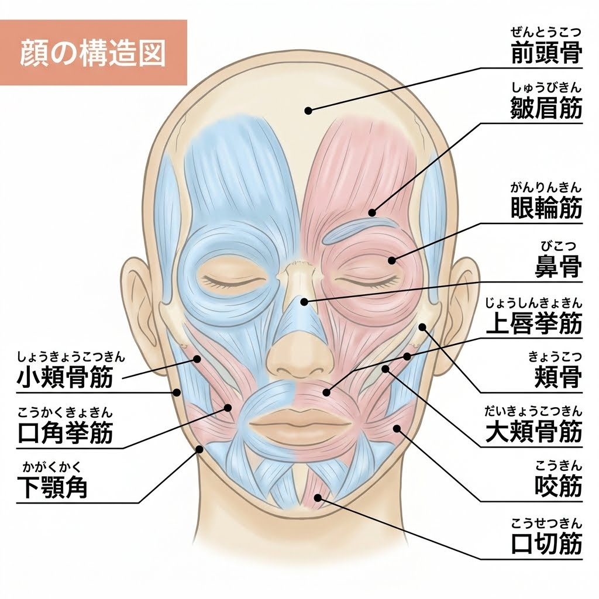
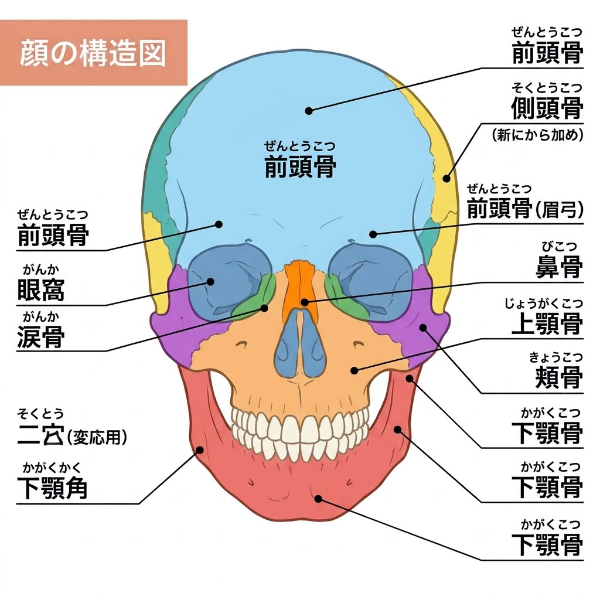

上顎骨・下顎骨
上顎や下顎を形づくり、歯列や咀嚼に関係します。下顎骨は顎関節を介して動きます。
顔は皮膚だけでできているわけではありません。骨を土台に、筋肉・筋膜・脂肪・皮膚、そして組織を支える靭帯などが関係し合っています。顔の構造を建物に例えながら、表情が生まれる仕組みを見ていきましょう。
顔の表面に近い表情筋と、その土台となる頭蓋骨。2つの図を横に並べて、顔の構造を見比べてみましょう。


※図は構造を理解するための参考図です。個々の筋肉や骨の名称・位置は、本文の解説と照らし合わせて確認してください。
顔の組織を、建物の各階に例えて整理してみましょう。内側の土台から表面に向かって、それぞれ異なる役割を持つ組織が関わっています。
建物の外壁。外部刺激から守り、顔の表面の質感や感覚を担います。
クッションや緩衝材。浅い脂肪・深い脂肪などが顔の丸みや立体感に関係します。
動く構造と連結部分。表情筋が収縮し、皮膚や周囲の組織を動かします。
建物の基礎。顔の輪郭を形づくり、器官を囲み、筋肉などの付着部になります。
※これは理解を助けるための模式的な例えです。実際の顔では、脂肪・筋肉・筋膜などの位置関係は部位によって異なり、きれいな4層に分かれているわけではありません。
顔面の骨格は、顔の輪郭や立体感を形づくる基本です。
上顎や下顎を形づくり、歯列や咀嚼に関係します。下顎骨は顎関節を介して動きます。
頬の突出や顔の横幅に関係し、咀嚼筋など周囲の組織の付着部にもなります。
鼻の骨格や目の周囲のくぼみを構成し、内部の器官を囲んで保護します。
顔の形を支えるだけでなく、筋肉の付着場所となり、表情や咀嚼の動きの基盤になります。
表情筋は収縮によって皮膚や周囲の組織を動かし、笑顔・驚き・まばたきなどの表情をつくります。
目の周囲を取り囲み、まぶたを閉じる動きに関わります。
口の周囲を取り囲み、唇を閉じたり、すぼめたりする動きに関わります。
口角や上唇を上外側へ引き上げる動きに関わり、笑顔の形成に重要です。
顔の浅い層に広がる筋膜性の構造です。表情筋や皮膚側の組織と連続し、顔の軟部組織の連携に関係します。
表情筋の付着様式は筋肉ごとに異なります。すべての表情筋が同じ形で骨から皮膚へ伸びているわけではありません。
顔の脂肪は一つの大きな塊ではなく、部位ごとに区画をつくり、浅い層と深い層に分布しています。
頬のふくらみや輪郭に関係し、表情や顔の立体感を形づくります。
眼窩の周囲に分布し、眼球周囲の組織を支える構造の一部です。
顔の部位によって層や区画が異なり、筋膜や支持靭帯などとの位置関係も異なります。
形やボリュームをつくるほか、組織間の滑走や緩衝にも関係します。
皮膚は外界と身体の境界となり、顔の表面を保護する重要な組織です。
表皮：外部からの刺激や異物の侵入を防ぐバリアの役割を担います。
真皮：コラーゲンや弾性線維などを含み、皮膚の強さや弾力に関係します。
皮下組織：脂肪などを含み、皮膚の下にある組織とつながっています。
外部刺激から身体を守ること、水分の蒸発を抑えること、触覚や温度などの感覚を受け取ることなどです。
皮膚の状態や動きは、下にある脂肪・筋膜・筋肉などとの関係にも影響されます。
顔には、皮膚や脂肪などの軟部組織を支え、組織同士の位置関係を保つ支持構造があります。その一つがリガメントです。
建物の杭のようにイメージできますが、顔のリガメントがすべて骨から皮膚まで一直線に貫通しているわけではありません。
骨膜や深部の筋膜などから皮膚側の組織へ連続するものなど、部位によって構造が異なります。
リガメントは顔の支持構造の一部です。顔の組織を一つの靭帯だけで固定しているわけではなく、筋膜・脂肪区画・皮膚など複数の組織が協調しています。
笑顔は、一つの筋肉だけでつくられるものではありません。神経からの指令を受け、複数の表情筋が協調して動きます。
脳から顔面神経を通じて、表情筋へ運動の信号が伝わります。
大頬骨筋などの表情筋が収縮し、口角や頬の位置を変化させます。
皮膚や脂肪、筋膜など周囲の組織も、筋肉の動きに伴って変化します。
複数の筋肉と組織が協調し、その人らしい表情がつくられます。
顔の動きや位置を理解するときは、顔だけでなく、頭部・首・顎関節など周囲の構造にも目を向けることが大切です。
顔面の骨格と頭蓋は連続し、器官を保護する構造をつくります。
頭部の位置や向きを支え、顔の向きや姿勢と関係します。
口を開閉する動きや噛む動作に関わります。
顔面神経は表情筋の運動に、三叉神経は顔面の感覚や咀嚼筋の運動に関係します。